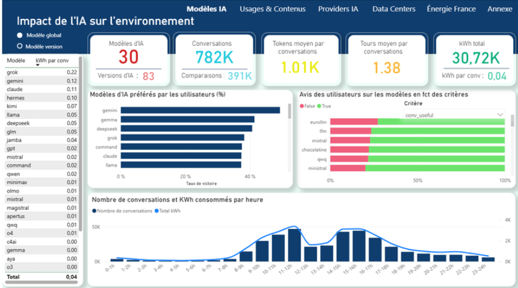
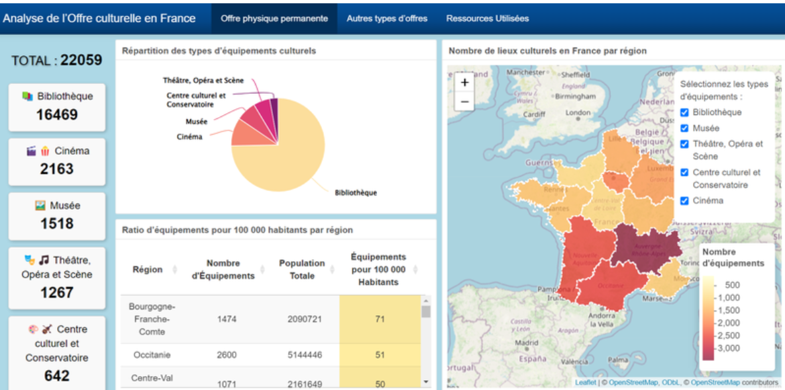
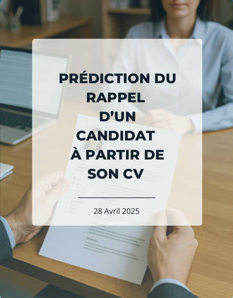
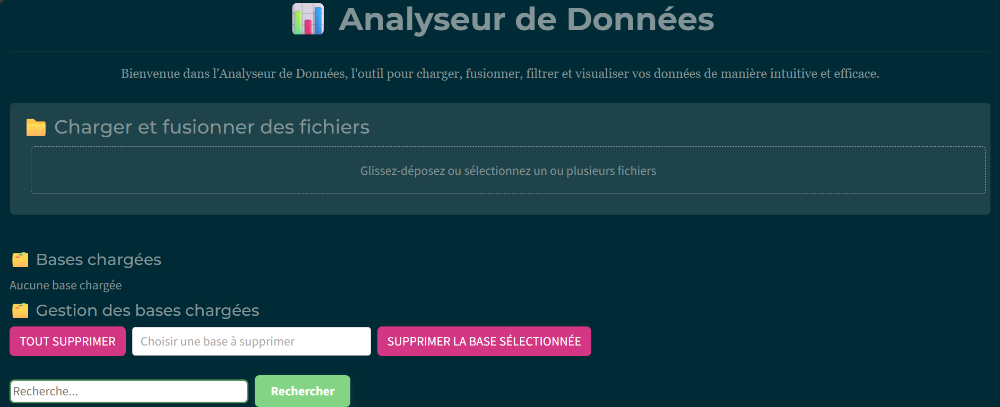

▥Dashboard
Impact de l’IA sur l’environnement
Exploration de plusieurs sources pour rendre plus lisibles les enjeux environnementaux associés à l’intelligence artificielle.
Power BIData visualisation
Voir le projet ↗

⌁Application
Analyse de l’offre culturelle en France
Visualisation interactive pour explorer la répartition territoriale de l’offre culturelle par région.
RShiny
Voir le projet ↗

◎Classification
Prédiction du rappel d’un candidat
Comparaison de modèles supervisés pour étudier les facteurs associés au rappel d’un candidat après l’envoi d’un CV.
RLDA / QDAArbres
Consulter l’étude ↗
◌Analyse multivariée
Segmentation des départements français
Étude des différences territoriales d’accès à la culture selon l’offre disponible et le contexte socio-économique.
ACPACMClusteringR
Consulter l’étude ↗

↗Économétrie
Investissements étrangers et croissance en Afrique
Analyse du rôle des investissements directs étrangers dans la croissance de 32 pays africains entre 2000 et 2022.
Données de panelÉconométrieR
Voir le projet ↗
⇄Optimisation
Optimisation d’un plan de transport
Modélisation d’un problème d’allocation des stocks et de satisfaction de la demande pour minimiser les coûts de transport.
PythonOptimisationProgrammation mathématique
Télécharger le projet ↓

▤Application web
Application d’analyse de fichiers tabulaires
Application pour importer, nettoyer, explorer et visualiser des fichiers CSV et Excel, avec export des résultats.
PythonPandasDashPlotly
Consulter le mémoire ↗
◈Finance & risque
Gestion de portefeuille en assurance automobile
Étude du compromis rendement-risque et de la diversification, avec une réflexion sur les risques financiers et techniques en assurance.
RModèles de comptageRisque
Consulter le projet ↗
⌕Data cleaning
Nettoyage et exploration de données
Préparation d’un jeu de données, analyse descriptive et création de visualisations pour synthétiser les principaux résultats.
RStatistiquesVisualisation
Voir le projet ↗